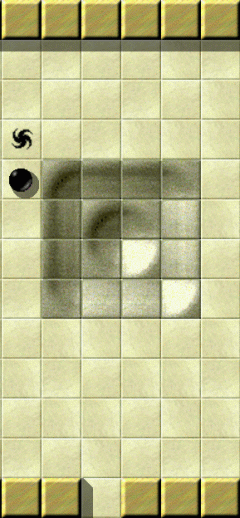
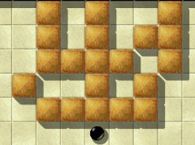
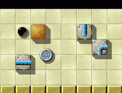
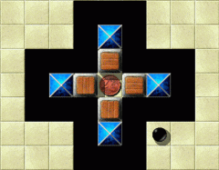
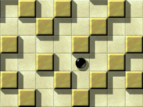

Level of the MonthEach month, we take a closer look at excellent Enigma levels. Excellent levels are those with the highest average user ratings and the greatest number of ratings altogether. Thus it is your vote that determines the Level of the Month. So please rate the levels you play and do not forget to submit your ratings together with your scores at the end of each month. You can find all previous Levels of the Month in our archive. December 2007: “Temple of Gold” by Jacob Scott & Ronald Lamprecht

Enigma VII # 24 'Temple of Gold'
The whirlpool of the ancient godess Welcome, dear fellow marblers, and please remain silent, as we enter the sacred halls of the “Temple of Gold”, December's Level of the Month. Many thought it only existed in the realm of fairy tales. We'll prove these skeptics wrong by exploring the temple's interior together, even those rooms still considered to be inaccessible (of course with due respect for the time-honoured traditions of this holy place, and with with the utmost caution not to walk into some trap set long ago by the founders of the temple to welcome uninvited guests). We are guided by the reports of two of our fellows, who managed not only to survive the golden perils of the temple, but also to gain access to the four altar rooms and there to illuminate the holy oxydian stones. These daredevils, worthy of our admiration, are Taztunes and Craven. Also detailed accounts have been submitted to us from the architect of the building, the amazing Mr Jacob Scott, and from Mr Ronald Lamprecht, this time in the position of a security consultant. Later on, member Daydreamer will talk about his observations of some secret ceremony being performed at the temple.
Instead of tiring statistic accumulations, this time some short “Alien Glyphs”:9.25(8)9.13(8)9.11(9)9.00(5)As always, you can find more details on the LotM archive page. Experience some sort of mystical sensation!I can't think of any level better suited for the first jubilee edition of the LotM award than “Temple of Gold”. For the 10th time now “we take a closer look at excellent Enigma levels”. Christmas is approaching, which also can be referred to as an excellent level, though not of Enigmian origin, with a strong emphasis on exploring, not only piles of Christmas presents under the tree, but also the interiors of the soul, where piles of rubbish accumulated during the year - remnants of unpleasant experiences of everyday struggles. On this joyous occasion, what a relief it is, to finally enter the inner golden temple and leave the outer world behind. And exactly the same is happening, while you're exploring Enigma's Golden Temple: Nothing else matters!

Blackish bedight, A marbleous knight,
In sunshine and in shadow, Had rolled along, Singing a song - In search of Templo Dorado. Let us seize the opportunity to take a look back at our first Level of the Month, “Island Labyrinth”, another marvellous creation by Jacob. “It's a level that makes the reality disappear” Alejandro wrote about it, meaning the same as what I just said about “Temple of Gold”. Other prominent statements which can be applied to “Temple of Gold” without changing a single word are: “Little by little, the pieces of the puzzle start to fit together as the marble explores this fascinating landscape” (Taztunes), “For me this level expresses what I call the true spirit of Enigma” (Ronald), “It would really be a pity to rush through this wonderful level” (Ronald), “One of the most charming characteristics of this level is provided by Jacob's consistent design” (Andreas). Almost all players who have ever taken a glance at “Island Labyrinth” will ever since associate the stylistic combination of st-rock1, fl-water and fl-leaves with this level. In the very same way the significant combination of st-yellow and fl-sahara will furthermore inseparably be connected with “Temple of Gold”. It is essentially this colour design that get's one to experience some sort of mystical sensation, appropriate to the scene. Let's listen to some words of the author about his work: “I intended ”Temple of Gold“ to be reminiscent of some exotic temple”I do find the temple, at least the exotic sort, (as popularized by various
adventure books/films) a great place around which to center a level, largely
because of the mystery associated with it. I wasn't inspired by any particular
source, but I did tap into the sense of intrigue and exploration one usually
attaches to a temple, especially one recently discovered from a long-gone
civilization, just waiting to be explored!
“Temple of Gold” was another of my attempts, like “Elaborate,” to
create a large exploration-oriented level. I wanted the main focus of
the level to be discovering the various rooms and the objects in them
without having to worry too much about dying for silly reasons. Thus
I added few dangers likely to kill a cautious player, the worst being
a slow rotor in one of the rooms, and kept the rooms for the most part
open. The real challenge of the level comes in its nonlinearity,
where it is not at all obvious what to do at any particular point. I
tend to enjoy these conceptual puzzles a lot, which is why I thought
it important to design a level that made one move and think between
rooms, instead of focusing on only the nearby objects to complete
whatever localized challenge I happened to design.

Indiana Marble & Short Round:
The escape from the prison pit I also intended “Temple of Gold” to be reminiscent of some exotic
temple with numerous obstacles blocking the most obvious paths to
exploration. As such, I kept the rooms largely open and clear of
everything nonessential to make the level appear large and
uncluttered. I also used only items one would expect (well, in the
typical temple explorer sense, not what one would find in real life)
to be native to a temple, things like abyss, a hammer, various guards,
and brown/wood movable stones. Together, these properties should give
a player in the level a sense of exploration, without having to avoid
trivial dangers or solve picky, dense puzzles that would ruin the
effect.
Overall, I am quite pleased with what the level turned into. I think
it maintains the illusion of an exotic temple quite well and is
reasonably fair and balanced, with no one part being way too easy or
difficult, and a large variety of puzzles being represented. It
continues with the theme of “Elaborate,” but in a more interesting and
sensation-evoking setting. I hope all Enigma players who attempt it
find it as enjoyable to play and to explore as I found it to write.
Also, I must thank Ronald a lot for his help finishing the level,
particularly in difficult mode. I initially had a few shortcuts that
could be exploited to finish the level faster than I intended, and
Ronald not only found good ways to patch these but also to add more
challenges, still within the theme, to difficult mode, to make it more
complete.
Indeed, “Difficult Mode” has turned out not to be an “easy” challenge, and those players who gave a try to “Houdini” for instance, another “Excellent Enigma Level”, will immediately recognize who had a hand in it. For all his efforts, he's overlooked something, but, well, let's let him tell us about it himself: “It may be the first level that needs quite different solutions for easy and difficult mode”I received the draft version of this level together with a bunch of
mainly finished but still untitled levels from Jacob for shortcut
testing and for making title suggestions. I was immediately
fascinated by this level. No packed tight rooms, but majestic
passageways with unique challenges once in a while. An exploration level
without any hidden objects with a unique coloring scheme
and the common blue oxyd pattern that satisfies.

This horse will be
of good service to me, if I can set it free! Seeing a totally empty room on the right I had to offer a ready pattern
with a blueish horse tied to a golden Brownie stone. It perfectly
fit the existing ditch and puzzle.
But the remaining task was to fix the shortcut in the overall
storyboard. My solution was the addition of the golden puzzle around one
of the blue oxyd patterns. But I was still unsatisfied with the left and
south oxyd patterns that were totally plain. I really enjoyed searching
for different challenges for each unique oxyd pattern.
But the final two challenges required yet another storyboard. The
solution was to offer two modes. An easy mode with the original
storyboard, that bypasses some of the added challenges. And a difficult
mode that adds new challenges and a quite different storyboard. It may
be the first level that needs quite different solutions for easy and
difficult mode - you should really play both!
Unfortunaly even several pairs of eyes overlooked another dexterity
shortcut. User “Moneymaker” sent us a report. But looking at the
scores obviously nobody besides him has yet found and used this
shortcut. The fix has been easy and is unvisible. It will be delivered
with the next Enigma release for sure.
The attentive reader might recall, that the name “Moneymaker” has been mentioned before in the record list. Racing through both, the Silver and the Golden Temple, at incredible fast speed, he set up records for eternity, but I dare say he did not experience too much of the mystical sensation that the temple presents to the attentive explorer! The reader, interested in charts and statistics, might find out more about the “Michael Schumacher” of Formula Enigma at the Score Statistics page. At top of the current “Solved Level Statistics” he'll also find the names of those two brave explorers, who have returned victorous from the Golden Temple and agreed to tell the Enigmian Nation about their adventures. Taztunes and Craven, would you please take the floor?! “Of hundreds of ways one actually works!”
And, as his strength, Failed him at length,
He met a pilgrim rotor. “Rotor,” said he, “Where can they be - The oxyds of Templo Dorado?” This level has got a bit of everything: dangerous passages in which you need to maneuver skillfully, and most of all a complex riddle, which now and again takes you to the brink of despair.
I didn't have much trouble with the easy mode because in most rooms it's quite obvious what to do. Only the barrier which you can see on the screenshot seemed to be invincible until I finally found the right “key”.
Because of this, I was quite optimistic about the difficult mode, only to find out that more things had changed than I had expected: the Oxyds were still in the same place and the general way to solve the level stayed the same, but there were also a few nasty surprises, like e.g. suddenly appearing platforms or a seemingly open door that still didn't allow me to move stones past it (I already got this one on “Houdini”!).
As there are practically hundreds of ways to overcome the riddles, of which but one actually works, the frustration factor is extremely high, so that I can absolutely understand, why only a few people could solve this level. However, you don't have to be as dexterous in “Temple of Gold” as e.g. in “How Many Spirals?” or, of course, “The Aztec Temple”, so that this level is definitely worth another try.
“I love these big sprawling levels”One of the most interesting aspects of Temple of Gold for me is the paradox of both the need to avoid being pulverized by the Rotor and the need to enlist it in the service of your marble, for without the rotor's ability to fly across the chasm, you can't retrieve your first coin, and without the rotor's intense drive to pursue your marble, you can't enter one of the rooms with an oxyd in it. The other rotors in this level are all malicious, but you need to tame the first rotor to do your bidding, or your efforts will prove futile.

“Over fields of gold, Far to the south,
Across the Chasm of the Rotor! Just stay by my side,” The rotor replied - “If you seek for the first oxyd of Templo Dorado!” The other make or break moments of this level for me are those that involve pushing puzzle pieces across the chasm with various objects serving as a proxy for the marble (first the 'horse' and then the 'bug'). I found the bug, with its smaller size and lesser density quite a bit harder to control. You need just the right amount of force or you'll tumble into the chasm and the bug might end up floating above it, evermore inaccessible.
I love these big sprawling levels - you have a number of objects - coins, a cherry, a seed, a hammer - to gather from rooms that are all quite spread out which have to be employed in other distant locations. You have to find creative ways to deal with the fact that if you use the wood-stones to do what needs to be done, there just aren't enough to allow you to cross the chasm that leads to the rightmost oxyd.
I recall the enjoyment I had when I initially discovered the Temple of Gold and set about exploring the various facets, determining how to collect all my equipment and then discovering how all the components fit together to allow me access to the various seemingly unreachable oxyds. And in November, I returned to the Temple of Gold to enjoy exploring its secrets again.
I recommend that folks just starting out try the easy version of the level first. It will serve as an excellent Geography lesson. I certainly hope that by the end of December, quite a few more marblers will have followed the five of us on this engaging journey!
By the way, it's indeed possible to ration the wood stones in such a way that one doesn't need the bug at the chasm. The main theme of the golden challenge …… seems to be the right use of the wooden stones and the seed. The wooden supplies are strictly limited and you're running quickly short of wood, if you don't act wisely. It is quite interesting to see that besides the “shortcut” previously mentioned by Ronald, both of our imaginative explorers seem to have discovered some sort of “longcut”. Without enough wooden stones available to build a bridge, they managed to push the puzzle piece across the chasm with help of the bug. Craven has told me in private to have experimented with this solution before discovering the “shortcut”. An appropriate introductory level into the right use of seeds and wooden stones is “Growing Boxes” (II/21). The player has to realize the “destructive” power of the seed to “succeed”. This level also demonstrates the functionality of bridges quite well. An open bridge can't be recognized and just looks like abyss. When a stone is pushed onto it, the bridge closes, and re-opens automatically, when the stone is pushed off again. Thus, the wooden stone for instance doesn't fall into if pushed onto what seems like an abyss. It is crucial for the solution to know that there are (several) bridges near a certain oxyd stone. And there's a way to … Well, I won't tell anymore, not to spoil your exploring party. But I dare to predict, that equipped with such knowledge, with the beginning of the new year, much more players will have paid a visit to “Temple of Gold” 
One more seed would be nice!
If there's need for more extensive information, as always in such cases, the “mag.heut.net” forum is a good place to go. If I recall correctly, user “Hairball” has started a thread in the English Tipps & Tricks section. As suggested by Ronald, other informative and entertaining levels, where the player's confronted with the challenge to make wise use of seeds and wooden stones, are the Seed Puzzles I & II (IV/71&74), also written by Jacob. And, of course, “Tool Time” occurs to me, our LotM September, where setting the seed at the right spot also is a central subject. But the foundation for such technical knowledge is the adjustment of the player's mind to the level that he wants to solve. The mind is a field of opportunity. If it is cultivated the right way, the player will harvest plenty of the fruits of knowledge, for example he'll know all about door_b of the temple without looking at the sacred codes - or was it without eating the soured cakes? If the field's not cultivated the right way, the player will roll his marble through the most beautiful and amazing landscapes without understanding anything, as if he was rolling evermore in some neverending desert, nothing but fl-sand everywhere, just occasionally the marble stumbles across some st-rock1. Our fellow Daydreamer returned to us from the inner sanctum of the golden temple and told us about some very strange though instructive incident he was granted to observe: The Summoning of the Codex of Ultimate Golden WisdomIt is said that even the wildest and most cruel of all beasts, the dreadful rapid giant rotor rabbit, can be tamed, if the sacred verses of the golden twentyfive-fold path are recited by a truly devoted marble the right way. And it is also said, that if four of such tamed beasts will start dancing around the four holy oxydian altars to the voice of the sacred verses accompanied by the beats of the holy golden hammer, then even those blueish fake stones will illuminate and their brightly golden shine will spread all across the temple's halls, and from the void in the room where the golden hammer has been kept, the Codex of Ultimate Golden Wisdom will rise, and it will reveal to the truly devoted seeker the eternal rules of the Golden Path of Level Solving. The Golden Path of Level Solving …… is the union of eye, mind and mouse - the union of
your individual intelligence with the level creator's intelligence that
orchestrates the level.

The followers of the golden path
won't get lost in the golden maze! The Golden Path of Level Solving is a state of being, in which the
elements and forces that comprise your biological organism are in
harmonious interaction with the elements and forces that comprise the
logical organism of the level. Established in this state, you will
experience enhanced emotional, psychological, and spiritual well-being
and will increasingly notice the spontaneous enlightenment of the
level's oxyds.
As you keep on following the Golden Path of Level Solving, all of your
worries and even your worst nightmares fall away and you feel a sense of
lightheartedness and joy. There is a spontaneous blossoming of
intuition, insight, imagination, creativity, meaning, and purpose.
The Golden Path of Level Solving is not an enemy of spiritual awakening
but rather a potentially helpful friend. December's Level of the Month
reveals to us, the mysterious nonlocal domain where everything is
instantly correlated with everything else. Where fl-sahara and
st-yellow, fl-abyss and st-wood, fl-bridge-open and st-wood,
it-trigger and st-brownie, st-door_b and it-seed, it-hammer and
st-rock3_break, it-coin1 and st-coinslot, ac-rotor and it-cherry,
ac-blackball and ac-bug resolve into a field of pure potentiality.
“Temple of Gold” is the realm where the immeasurable potential of all
that was, all that is, and all that ever will be in the world of Enigma,
manifests and differentiates into the player and the level, the marbler
and the marble, the oxyd seeker and the oxyd.
These words of wisdom have been brought to us by our noble explorer Daydreamer, who reported to have been eye witness to this unbelievable ceremony. But due to the soporific effect of this litany he fell asleep, and didn't get the rest of the story. Hardly anyone other would fall asleep in such astonishing and exciting surroundings, as which “Temple of Gold” presents to the attentive explorer. But I hope this - ehm - entertaining narrative has its effect on one or the other reader, in having him made curious to explore the mysteries of the temple on his own. I dare say that this golden star of level composing arts will shine brightly for eternity in the Heaven of Enigma. In January there will be no “Level of the Month”, because of the “Level of the Year” award, and thus no LotM-article. There won't be a special article about the LotY as well, as it is one of the 10 “excellent” levels of the month, which we already “took a closer look at”. Hence, we'll be back in February, when we say for the 11th time: “Each month, we take a closer look at excellent Enigma levels…” Fare thee well, dear fellow marblers, and IV/2, |